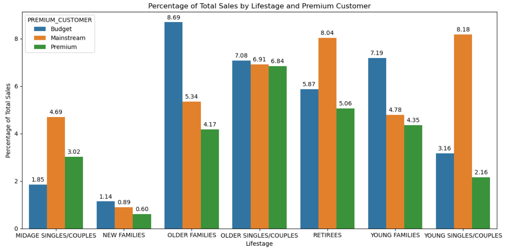
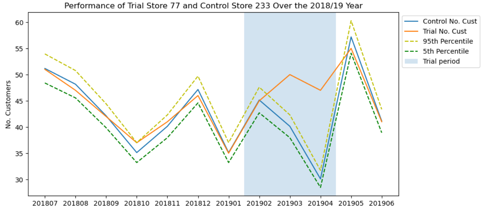

The question: Which customer segments actually drive chip category sales? Perform A/B testing to examine the effect of a new store layout on store performance.
Approach: Cleaned and merged transaction and customer datasets covering 246K+ records, then segmented customers to find that a small set of segments collectively, accounted for roughly 25% of total chip sales. I ran affinity analysis to see which products each segment over-indexed on. Then for next task, I designed a trial-vs-control store matching framework using correlation and magnitude distance so any sales lift could be attributed to the trial, not to store-to-store noise.
Outcome: Top sales segments are Budget Older Families, Mainstream Young Singles/Couples, and Mainstream Retirees, suggested segment-specific promotional campaigns and category planning as they contribute the highest sales and a statistically defensible A/B test design that could support a real store-layout rollout.

